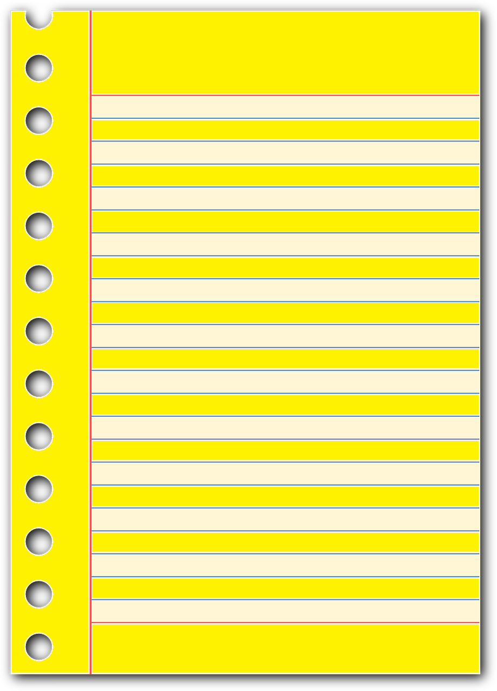
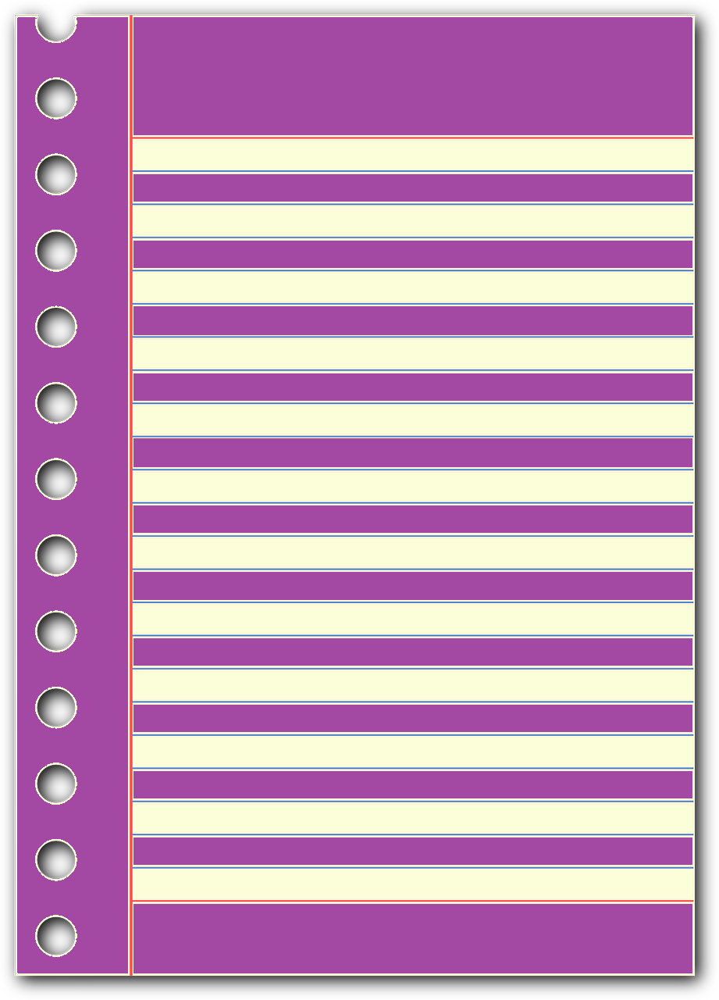

Imprescindible
 Prioritario
Prioritario
 Esencial
Esencial
 Profundizar
Profundizar
- 1 NÚMEROS NATURALES
-  1.1 Sistema de numeración decimal.
-  1.2 Aproximación de números.
- 1.3 Operaciones y propiedades
 1.3.1 Suma y resta
1.3.1 Suma y resta- 1.3.2 Multiplicación
- 1.3.4 División
1.4 Operaciones combinadas. 1.5 Potencias
1.5.1 Definición
 1.5.2 Potencias de base 10.
1.5.2 Potencias de base 10. 1.5.3 Operaciones con potencias.
1.5.3.1 Misma base
1.5.3.2 Mismo exponente. 1.6 Raíces cuadradas.
1.7 Problemas
Video Explicativo
 Explicación Teoría
Explicación Teoría
 Ejemplos
Ejemplos
Ejercicios Soluciones
 Ayuda
Ayuda